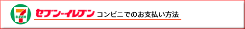
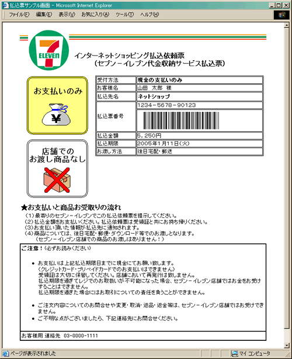

お客様がご注文された商品の代金は、お近くのセブンイレブン店頭にて現金でお支払いください。
※コンビニ店頭での変更・払戻しはできませんので、予めご了承ください。
画面上にて、「払込票番号」または「払込依頼票のURL」を表示いたします。

「払込票番号」のメモまたはプリントアウトした「払込依頼票」を持参してください。
「払込票番号」もしくはプリントアウトした「払込依頼票」をレジにご提示いただき、店員に「インターネット
代金の支払い」とお伝え下さい。なお、お支払いは「現金」となります。
※コンビニ店頭での変更・払戻しはできませんので、予めご了承ください。
お支払い後、「インターネットショッピング払込受領証」をお渡しいたします。実際に代金を
お支払いされたことを証明する書類ですので、大切に保管してください。
店舗側で入金を確認次第、商品配送の手配をいたします。